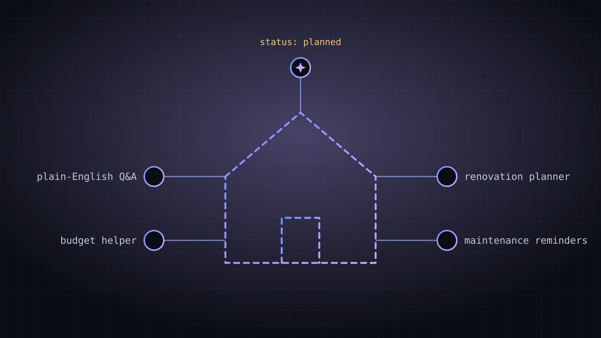

AI Homeownership Tools
An idea in planning: AI-assisted tools for renovation planning, maintenance reminders and plain-English real estate answers. Nothing is built yet.
This page describes an idea I intend to explore. There's no code or demo yet. I'll update the status and add screenshots once work begins.
The idea
This is where my two interests meet: homes and AI. Owning a home comes with a lot of research, planning and remembering, the kind of work AI tools might genuinely help with if they're designed carefully. On my realty site, I've listed a few tools I'd like to build:
- Renovation planning assistant: help scoping a project, listing questions to ask contractors, and organizing quotes.
- Personalized maintenance reminders: seasonal tasks based on a home's age, systems and location.
- Plain-English real estate Q&A: explanations of terms like escrow, equity and PMI.
- Interactive renovation budgeting: estimates, contingencies and comparisons in one place.

Questions I'll need to answer
- Which tool is small enough to build first and still be useful?
- How do I keep AI answers accurate, and make it clear when something needs a professional (lawyer, lender, inspector)?
- What data would a tool need, and how do I handle it responsibly and securely?
- Does a tool need an AI model at all, or would a simple checklist do the job better?
What I expect to learn
Working with AI model APIs, designing prompts and tool use for agents, building a small backend securely, and the hardest part: deciding what not to automate.
Status
Planned. When I start, I'll document it in AI & Automation and update this page.